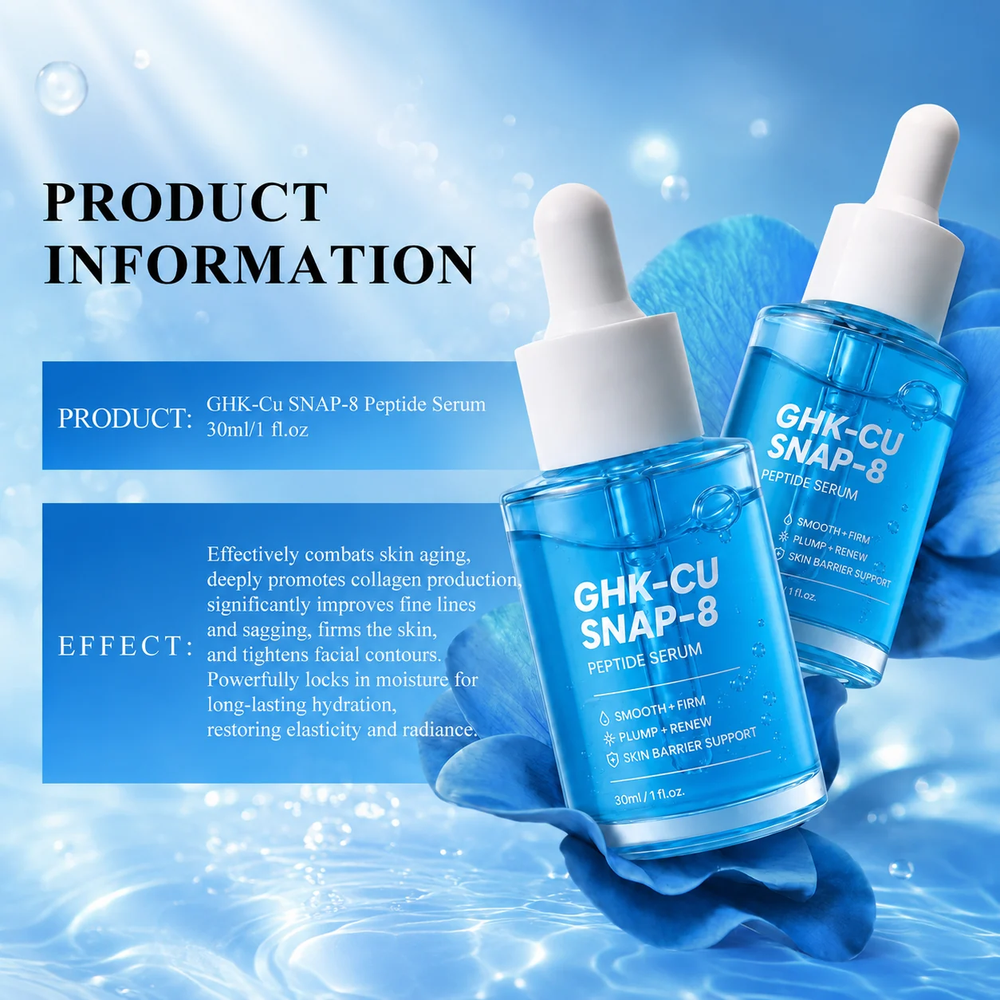

Skin Care • PRIVATE LABEL
GHK-CU & SNAP-8 Peptide Serum – Hydrating Firming Anti-Aging Facial Serum
This GHK-CU & SNAP-8 Peptide Serum is a lightweight facial serum designed to support smoother, firmer and more hydrated-looking skin. The formula combines GHK-CU (Copper Peptide), SNAP-8 peptide and Hyaluronic Acid to help improve the appearance of fine lines, support skin elasticity and maintain moisture.
Fast
Response
Response
Quality
Assurance
Assurance
OEM/ODM
Support
Support
Global
Shipping
Shipping
HighlightsIngredientsCustomizationFAQRelated Products
Product Highlights
Key Selling Points
Smooths the Look of Fine Lines
Supports Firmer-Looking Skin
Deep Hydration & Moisture Retention
Supports Skin Barrier Care
Promotes Youthful-Looking Radiance
Formula Reference
Key Ingredients
| Ingredient |
|---|
| GHK-CU |
| SNAP-8 |
| HYALURONIC ACID |
B2B Customization
OEM / ODM Customization
Custom LogoPrivate LabelCustom FormulaCustom FragranceCustom ColorCustom PackagingCustom SizeOEM/ODM
Product FAQ
Questions About GHK-CU & SNAP-8 Peptide Serum – Hydrating Firming Anti-Aging Facial Serum
What is GHK-Cu & SNAP-8 Peptide Serum used for?
It is designed for daily facial skincare to help improve the appearance of fine lines, dryness and loss of firmness while supporting smoother, hydrated and more radiant-looking skin.
What is GHK-Cu?
GHK-Cu is a copper-binding peptide widely used in anti-aging skincare formulations to support skin-conditioning, elasticity and a healthier-looking skin appearance.
What is SNAP-8?
SNAP-8, also known as Acetyl Octapeptide-3, is a cosmetic peptide commonly incorporated into formulas designed to reduce the visible appearance of expression lines and wrinkles.
Does the serum contain Hyaluronic Acid?
Yes. Hyaluronic Acid is included as a key hydrating ingredient to help retain moisture and support a smooth, plump-looking complexion.
What skin concerns is this serum suitable for?
It is particularly suitable for skincare routines targeting visible fine lines, dryness, dullness and loss of elasticity or firmness.
Related Products
Build A Complete Product Line


Request A Quote For GHK-CU & SNAP-8 Peptide Serum – Hydrating Firming Anti-Aging Facial Serum
Send us your target market, quantity, formula requirements and packaging idea. We will reply with a practical OEM/ODM solution.